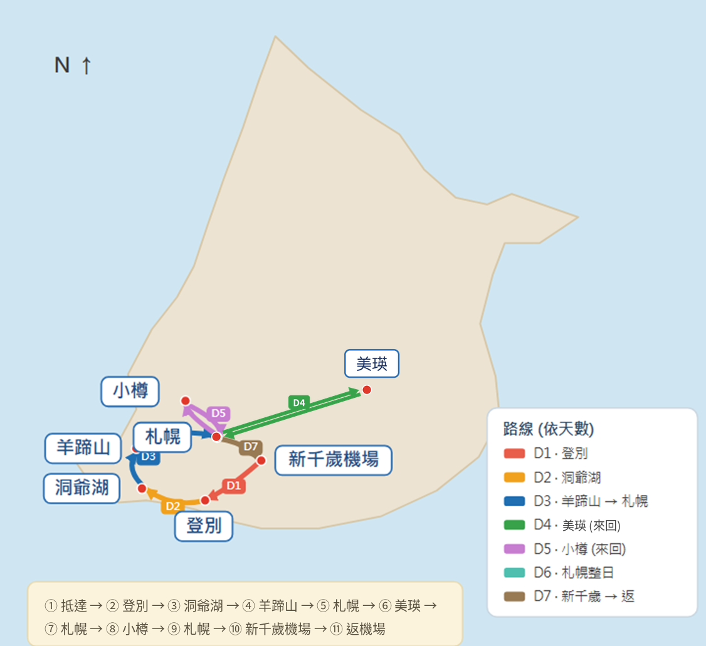

hokkaido 11/15-21
Map

① 抵達 → ② 登別 → ③ 洞爺湖 → ④ 羊蹄山 → ⑤ 札幌 → ⑥ 美瑛 → ⑦ 札幌 → ⑧ 小樽 → ⑨ 札幌 → ⑩ 新千歲機場 → ⑪ 返台
🗓️ Daily Itinerary and Map
Day 1
11/15 (SUN) TPE ➔ CTS ➔ 登別
09:15 – 14:05
TPE T1 ✈️ CTS T1
📍 新千歲機場
15:30 – 16:00
租車手續・取車
ORIX。確認：雪胎 (studless)、ETC / HEP、油種（レギュラー）
📍 ORIX 新千歲機場店
🔗 店舖資訊
16:00 – 18:00
新千歲 ➔ 登別
🚗 約 1.5–2 hr
🧭 開車導航
18:00 – 18:20
Check in : 登別
18:20 – 19:30
晚餐
登別周邊（未定）。
Day 2
11/16 (一) 登別 ➔ 洞爺湖
09:00 – 09:30
Check out
09:30 – 10:30
地獄谷 + 大湯沼展望台
📍 地獄谷
📍 大湯沼展望台
🔗 Reference
10:30 – 12:00
登別 ➔ 洞爺湖
🚗 約 1.5 hr
🧭 開車導航
12:00 – 13:00
午餐
洞爺湖周邊（未定）。
13:00 – 15:00
有珠山展望台 & 纜車
與 SAIRO 展望台視情況擇一。
📍 有珠山纜車
🔗 Reference
15:00 – 16:00
SAIRO 展望台
&有珠山視情況擇一。
📍 SAIRO 展望台
🔗 Reference
16:30 – 17:00
Check in : 洞爺湖
📍 洞爺湖溫泉
18:00 – 19:00
晚餐
洞爺湖周邊（未定）。
Day 3
11/17 (二) 洞爺湖 ➔ 札幌
09:00 – 09:30
早餐
10:00 – 10:20
Check out
10:20 – 11:20
洞爺湖 ➔ 羊蹄山
🚗 約 1 hr
🧭 開車導航
11:30 – 12:30
午餐
羊蹄山周邊，視情況跳過。
13:00 – 14:00
京極ふきだし公園（羊蹄山湧泉）
視情況跳過。
📍 京極ふきだし公園
▶️ 影片
14:00 – 16:00
羊蹄山 ➔ 札幌
🚗 約 2 hr
🧭 開車導航
16:00 – 16:30
Check in：札幌
18:00 – 19:00
晚餐
札幌（燒肉）。
19:00 – 20:00
薄野逛街
📍 薄野
▶️ 影片
Day 4
11/18 (三) 札幌 ➔ 美瑛 ➔ 札幌
08:30 – 09:00
早餐
09:00 – 11:30
札幌 ➔ 美瑛
🚗 約 2.5 hr
🧭 開車導航
12:00 – 13:00
午餐
美瑛（未定）。
13:00 – 14:00
美瑛神社
📍 美瑛神社
🔗 Reference
14:00 – 16:00
白金青池 & 白鬚瀑布
📍 白金青池
📍 白鬚瀑布
🔗 Reference
16:00 – 17:00
下午茶：Ferme La Terre Biei
📍 Ferme La Terre
🔗 Reference
17:00 – 17:40
青池冬季點燈
📍 白金青池
18:00 – 21:00
美瑛 ➔ 札幌
🚗 約 2.5 hr
21:00 – 22:00
藥妝逛街 & 休息
自由活動。
Day 5
11/19 (四) 札幌 ➔ 小樽 ➔ 札幌
09:00 – 09:30
早餐
09:30 – 10:20
札幌 ➔ 小樽
🚗 約 50 min
🧭 開車導航
10:20 – 11:30
三角市場
📍 三角市場
🔗 Reference
11:30 – 12:20
小樽運河 + 淺草橋
📍 淺草橋
▶️ 影片
12:20 – 13:30
午餐
小樽（未定）。
13:30 – 15:00
堺町通
📍 堺町通
▶️ 影片
15:00 – 15:40
下午茶
小樽（未定）。
16:00 – 18:00
青之運河
小樽運河冬季點燈活動。
📍 小樽運河
🔗 Reference
18:00 – 19:00
小樽 ➔ 札幌
🚗 約 50 min
🧭 開車導航
19:00 – 20:00
晚餐
札幌（未定）。
21:00 – 22:00
藥妝逛街 & 休息
自由活動。
Day 6
11/20 (五) 札幌市區整日
09:00 – 10:00
二條市場
與北海道大學視情況擇一。
📍 二條市場
🔗 Reference
10:00 – 11:00
北海道大學
與二條市場視情況擇一。
📍 北海道大學
🔗 Reference
11:00 – 12:00
札幌諏訪神社
📍 札幌諏訪神社
🔗 Reference
12:00 – 13:00
午餐
札幌（未定）。
13:00 – 16:00
北海道神宮 & 伏見稻荷神社(買酒)
📍 北海道神宮
📍 伏見稻荷神社
▶️ 影片
16:00 – 18:00
大通 / 狸小路
📍 大通公園
📍 狸小路
18:00 – 19:00
晚餐
札幌（湯咖哩）。
19:30 – 21:00
藻岩山夜景
需要門票（最晚 22:00）。
📍 藻岩山纜車山麓站
🔗 參考
21:00 – 22:00
藥妝逛街 & 休息
自由活動。
Day 7
11/21 (六) 札幌 ➔ 新千歲 ➔ 現實
08:00 – 08:30
早餐
09:00 – 09:40
Check out
09:40 – 11:00
札幌 ➔ 新千歲
🚗 約 1 hr
🧭 開車導航（還車）
11:00 – 13:00
加油 & 還車 / 午餐
還車前加滿油（レギュラー），13:00 前完成還車。
📍 機場附近加油站
13:00 – 14:00
退稅 & 伴手禮
📍 新千歲機場國內線商店街
15:20 – 19:05
CTS T1 ✈️ 桃園 TPE T1